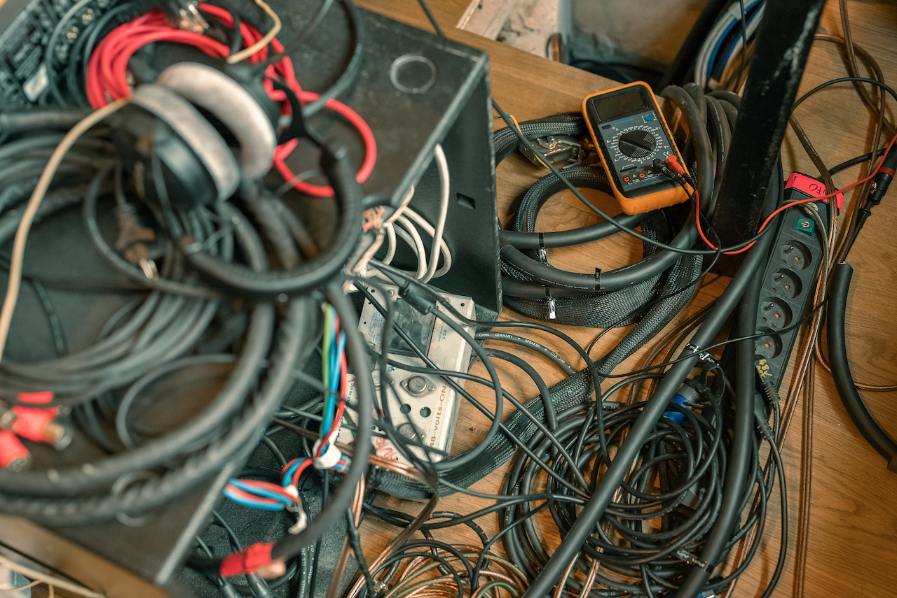

O
ne of the people who knows the most about the behind-the-walls ecosystem at Rue Boyer is Rémy Dumelz. After years working closely with Maxime Le Guil as an assistant and engineer, he is now responsible for the maintenance of the studio. Dumelz has worked on all aspects of the creation of Rue Boyer, helping WSDG and Symphonic Acoustics, and then taking it from where they left off, dealing with wiring, installing gear, the Atmos system, and more.
“The first thing you need to know is that Studio A can do everything,” says Dumelz. “It does Atmos, it does full analogue with an SSL desk and a tape machine, it works fully digital (i.e. in the box), and it can work as a live room when the console goes below ground. We were designing a room that is essentially three rooms in one.”
“I had to find the best solutions to ensure that everything works together. We really tried to maximize the technical specifications of the studio in a creative way. I selected the gear, computers, converters, and so on. There is a lot of gear out there and we had to find the right pieces for the puzzle. Once everything arrived, it had to be assembled and installed.”
“We really tried to maximize the technical specifications of the studio in a creative way.”
“The very first shifts when we fitted the cables happened in late November 2021. For a long time it seemed like all I was talking about was cables! (laughs) The process was drawn out because some of the orders for cables were delayed. It is not easy to get Mogami cables in general, and the global situation at the time made it even more difficult. Even regular XLR connectors were out of stock everywhere.”
THE STORM BEFORE THE CALM
“Fitting cables is not a fun process! But thankfully WSDG designed tunnels under the floor that make it easier. All audio cables go through these tunnels: RJ45s, coaxial cables, and so on. It is a pain, but we have guide cables to help. It is hard work!”
“We had to make the cables by hand to meet our requirements so we did all the soldering, connectors, everything. I think we purchased more than a kilometre of cable just for the microphone XLRs! We bought around 800m of multi-channel cable, 500m of speaker cable and 500m of RJ and coaxial cable. We also had multicore cables, like 24-channel, 16-channel, 8-channel multicores. The MADI system runs on coaxial cable that we made to fit the studio. We built AES3 digital cables, which are similar to microphone cables but with a fixed impedance.”
“We designed our own XLR microphone panels, and embedded plenty of them around the entire ground floor, so when people plug things in it is very fast and there aren’t piles of cables on the floor, which means that the walkways are always clear. It really makes a difference for the artists and for the engineers. We even managed to save on cables, because we knew that we wanted to keep the computers in the control room, so they are accessible at all times. We find it frustrating when the computers are located far away in the machine room.”